469 — Lác & nhược thị ở trẻ sinh non/ROP: kính chỉnh, bịt mắt vs atropine, thời điểm can thiệp / Strabismus & amblyopia in preterm/ROP children
Tags: pattern:lac pattern:nhuoc-thi vung:mat protocol:chinh-thi-tre-non
Mức chắc chắn (certainty): tổng hợp y văn (literature synthesis) — nhóm tự biên từ y văn mở (Br J Ophthalmol 2024 CC BY-NC; Eye 2023 CC BY; BMC Pediatr 2023 CC BY; Korean J Ophthalmol 2019 CC BY-NC; BMJ Open Ophthalmol 2021 CC BY-NC; Sci Rep 2022 CC BY; Biomed Res Int 2018 CC BY; Rom J Ophthalmol 2023 CC BY; Medicine 2015 CC BY-NC-ND; Br J Ophthalmol 2018 CC BY-NC), chưa gắn một ca nguyên văn đơn lẻ.
1. Tổng quan — vì sao trẻ sinh non "thu hoạch" cả lác lẫn nhược thị
- Bối cảnh (pathology): trẻ sinh non tích lũy nhiều bất thường khúc xạ và trục nhãn cầu cùng lúc — cận thị (nhất là sau điều trị ROP), loạn thị, dị khúc xạ (anisometropia), hoàng điểm lệch (macular ectopia)/võng mạc bị kéo do sẹo xơ–mạch, rối loạn chức năng hai mắt và rung giật nhãn cầu (nystagmus). Cộng thêm tổn thương não (bệnh não trắng quanh não thất) khiến một phần là suy giảm thị giác do não (cerebral visual impairment) — không thể sửa bằng kính. Vì vậy ở nhóm này lác và nhược thị thường đi đôi.
- Cơ chế — TẠI SAO lại gây nhược thị: võng mạc và vỏ não thị giác có "cửa sổ nhạy cảm" (sensitive/critical period); khi hai mắt nhận ảnh không tương xứng (mờ do khúc xạ, lệch trục, hoặc mất ảnh do đục/kéo võng mạc), não ức chế ảnh mắt yếu → giảm thị lực vĩnh viễn nếu không chỉnh sớm. Nhược thị ở trẻ non thường nặng hơn và kháng trị hơn vì có nhiều yếu tố cảm giác chồng lấp.
- Ngưỡng định lượng nằm lòng (Gutenberg Prematurity Eye Study, Fieß A et al., Br J Ophthalmol 2024, PMC11503079):
- Tỷ lệ lác theo mức non: 2,1% (≥ 37 tuần) → 6,6% (33–36 tuần) → 17,4% (29–32 tuần) → 11,1% (≤ 28 tuần) → 27,1% (ROP không điều trị) → 60% (ROP đã điều trị). Rung giật nhãn cầu: 0,7% → 1,5% → 4,3% → 5,6% → 10,4% → 26,7%.
- Yếu tố nguy cơ lác (hồi quy đa biến): dị khúc xạ ≥ 1,5 D — OR 3,87 (p = 0,003); viễn thị ≥ 2 D — OR 9,89; tuổi thai — OR 0,90 (p = 0,046). Lác thường xuất hiện trong 10 năm đầu đời.
- Yếu tố nguy cơ nhược thị (Fieß A et al., Acta Ophthalmol 2025, PMC12531598): tuổi thai ≤ 28 tuần OR 2,92; suy bánh nhau OR 3,84; ROP phải điều trị — OR 15,71 (p ≤ 0,001).
- Yếu tố chu sinh (Cao Y et al., BMC Pediatr 2023, PMC10039439, n = 128 trẻ non, 30 nhóm nguy cơ/98 đối chứng): loạn sản phế quản–phổi (BPD) OR 8,355; tổn thương chất trắng não OR 16,742; dùng levothyroxine OR 2,859; thở máy xâm lấn OR 2,983; glucocorticoid là yếu tố bảo vệ — OR 0,055.
- Loại lác ở trẻ non: Gadzo AP et al. (Rom J Ophthalmol 2023, PMC10117192) trên 126 trẻ ≤ 34 tuần/≤ 2000 g: 52,4% có lác (30,2% lác trong, 22,2% lác ngoài); nhóm ROP hoạt động 100% là lác trong; cân nặng/tuổi thai trung bình thấp hơn ở nhóm lác (1371,3 ± 58,0 g; 29,7 ± 0,4 tuần).
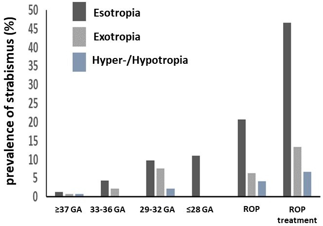
Cột đậm = lác trong (esotropia), xám = lác ngoài (exotropia), xanh = trên/dưới (hyper-/hypotropia). Lác trong chiếm ưu thế và tăng vọt ở nhóm ROP điều trị (~46% lác trong). Nguồn: Fieß A et al., Br J Ophthalmol 2024, PMC11503079 Fig. 1, CC BY-NC 4.0 (giữ nguyên bản).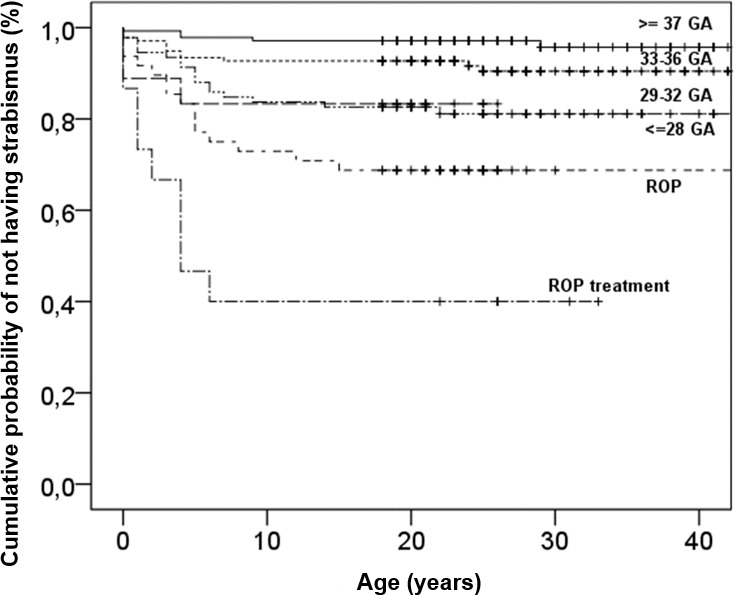
Nhóm ≥ 37 tuần giữ tỷ lệ không lác ~0,97; nhóm ROP điều trị tụt còn ~0,4 — lác xuất hiện dồn trong thập niên đầu. Nguồn: Fieß A et al., PMC11503079 Fig. 2, CC BY-NC 4.0 (giữ nguyên bản).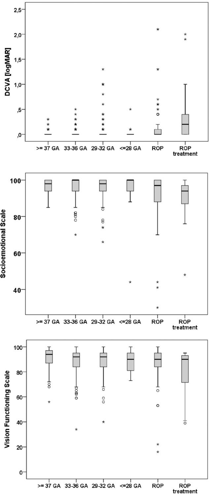
Từ trên xuống: thị lực chỉnh kính (DCVA, logMAR) tăng (xấu hơn) ở nhóm ROP điều trị; thang cảm xúc–xã hội và thang chức năng thị giác đều thấp hơn. Nguồn: Fieß A et al., Eye 2023, PMC10275879 Fig. 1, CC BY 4.0.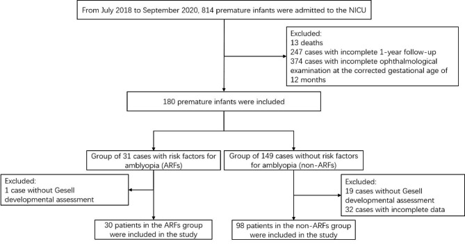
814 trẻ non nhập NICU → 180 đủ tiêu chuẩn → 31 trẻ có yếu tố nguy cơ nhược thị (ARFs) vs 149 không có; phân tích cuối 30 vs 98. Nguồn: Cao Y et al., BMC Pediatr 2023, PMC10039439 Fig. 1, CC BY 4.0.2. Mẫu hình + chẩn đoán phân biệt theo cơ chế (gamut theo nguyên nhân)
Cùng một "lác" nhưng cơ chế quyết định điều trị. Phân loại theo trục cơ chế:
- Lác trong khởi phát sớm ở trẻ non (esotropia): thường do viễn thị/dị khúc xạ; điều trị chính là kính chỉnh — nhiều ca hết lác khi đeo kính đúng. Trẻ ROP nặng/đã điều trị → lác trong cảm giác (sensory) do thị lực hai mắt chênh.
- Lác ngoài (exotropia): xuất hiện muộn hơn, hay ở trẻ có hoàng điểm lệch/cận thị sau ROP; tiên lượng chức năng hai mắt kém hơn.
- Lác cảm giác (sensory strabismus): hệ quả của ROP nặng (mắt thị lực kém kéo lác) — không thể "chữa" bằng tập luyện, cần điều trị bệnh nền + cân nhắc phẫu thuật.
- Lác trong cấp mắc phải đồng thời (acute acquired comitant esotropia — AACE): khởi phát đột ngột ở trẻ ≥ 5 tuổi, song thị, góc tương đối ổn định. Chen J et al. (Medicine 2015, PMC4697976, 47 ca): 2 ca có u góc cầu–tiểu não và 1 ca giun–tiểu não thoái hóa di truyền → AACE đòi hỏi chụp não–hốc mắt để loại trừ u hố sau.
- Nhược thị (3 thể): khúc xạ (refractive — dị khúc xạ/viễn thị cao), lệch trục (strabismic), do tắc/mất ảnh (deprivation — đục môi trường, kéo võng mạc). Ở trẻ non còn thể nhược thị hỗn hợp kèm thành phần não.
- Rung giật nhãn cầu (nystagmus): dấu hiệu tiên lượng nặng (Fieß A, PMC11503079) — nhóm ROP điều trị tới 26,7%, thường đi kèm nhược thị và hạn chế khả năng hồi phục thị lực hai mắt.
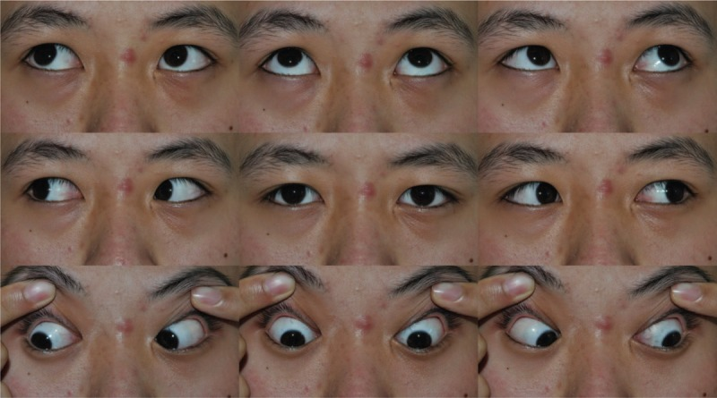
Ảnh ghép 9 hướng nhìn một ca AACE góc nhỏ: lác trong đồng thời, vận nhãn bình thường. Hình thái này có thể do tăng nhìn gần nhưng phải loại trừ u hố sau. Nguồn: Chen J et al., Medicine 2015, PMC4697976 Fig. 1, CC BY-NC-ND 4.0 (giữ nguyên bản, không ghép).3. Bảng so sánh phân biệt (ma trận đối chiếu)
| Thực thể (entity) | Lâm sàng/hình ảnh điển hình | Chốt vào (rule-in) | Chốt loại (rule-out) | Gợi ý xác nhận/xử trí |
|---|---|---|---|---|
| Nhược thị khúc xạ | Thị lực giảm một/both mắt, không có tổn thương thực thể | Chênh khúc xạ (anisometropia) ≥ 1,5 D, viễn thị ≥ 2 D KR sau lý liệt điều tiết | Đáy mắt/tổn thương thực thể giải thích được thị lực kém | Kính chỉnh đúng + theo dõi 6–8 tuần; bịt mắt/atropine nếu không cải thiện |
| Nhược thị do lác | Lệch trục + giảm thị lực mắt lác | Lác + thị lực chênh (kể cả lác nhỏ/microtropia) | Không lệch trục, thị lực hai mắt bằng nhau | Chỉnh khúc xạ + điều trị nhược thị trước khi mổ |
| Lác trong do điều tiết | Lác trong tăng khi nhìn gần, hết khi đeo kính | Hết/giảm rõ khi soi bóng + chỉnh viễn thị đủ | Còn lác lớn khi đã đeo kính → thành phần không do điều tiết | Kính lõm/thêm điều tiết; đo AC/A |
| Lác cảm giác sau ROP | Lác ở mắt thị lực kém, tiền sử laser/anti-VEGF | ROP điều trị + thị lực chênh + hoàng điểm lệch | Hai mắt thị lực cân bằng → không phải cảm giác | Điều trị nội khoa trước; phẫu thuật khi góc ổn định |
| AACE | Khởi phát đột ngột ≥ 5 tuổi, song thị, vận nhãn bình thường | Lác trong đồng thời mới + song thị khoảng cách | Nếu có dấu hiệu thần kinh (phù đĩa thị, liệt vận nhãn) → phải chụp | Chụp MRI/CT não–hốc mắt loại trừ u hố sau (Chen J 2015: 2/47) |
| Rung giật nhãn cầu ở trẻ non | Rung giật + thị lực kém hai mắt | ROP điều trị + rung giật (26,7%) | Rung giật đơn độc không kèm yếu tố nguy cơ | Kính chỉnh tối đa; hỗ trợ thị giác |
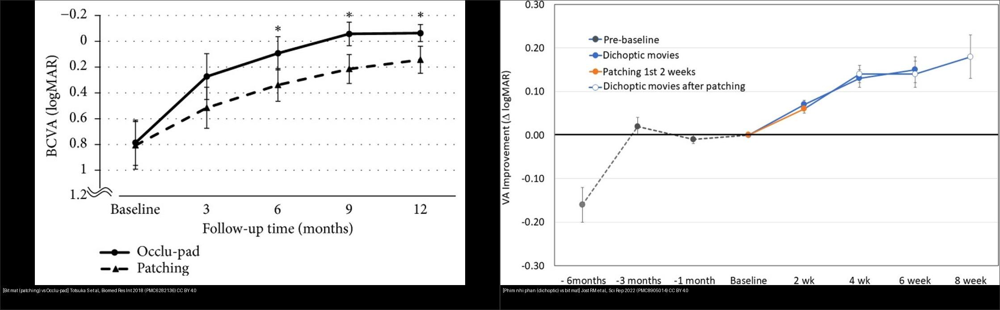
Trái: bịt mắt kinh điển vs Occlu-pad (BCVA logMAR theo tháng). Phải: phim nhị phân (dichoptic movies) vs bịt mắt (ΔlogMAR theo tuần). Nguồn: Totsuka S et al., Biomed Res Int 2018 (PMC6282136) CC BY 4.0 + Jost RM et al., Sci Rep 2022 (PMC8905014) CC BY 4.0. Ảnh ghép letterbox, giữ nguyên bản.Bảng phụ — so sánh các phương thức điều trị nhược thị (bằng số)
| Phương thức | Nguồn | Kết quả định lượng | Tuân thủ/ghi chú |
|---|---|---|---|
| Bịt mắt (patching) vs nhị phân | Brin TA et al., PMC8043000 (36 RCT) | MD −0,03 logMAR (KTC 95% 0,01–0,04) — khác biệt không có ý nghĩa lâm sàng | Tuân thủ dao động lớn, ảnh hưởng kết quả |
| Phim nhị phân tại nhà vs bịt mắt | Jost RM et al., PMC8905014 | 2 tuần: 0,07 ± 0,02 logMAR (tương đương bịt mắt); tới 6 tuần 0,15–0,18 logMAR | 3 phim/tuần vs bịt 14 giờ/tuần |
| Occlu-pad (iPad phân cực) vs bịt mắt | Totsuka S et al., PMC6282136 | Khác biệt rõ ở 6 tháng (nhược thị dị khúc xạ) và 9 tháng (nhược thị do lác) | Tuân thủ tốt hơn từ 3 tháng |
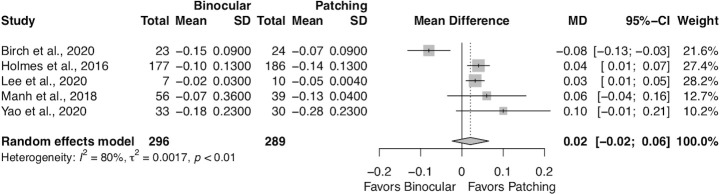
5 nghiên cứu, MD tổng 0,02 [−0,02; 0,06] — nghiêng nhẹ về bịt mắt nhưng không đáng kể; I² = 80%. Nguồn: Brin TA et al., BMJ Open Ophthalmol 2021, PMC8043000 Fig. 4, CC BY-NC 4.0 (giữ nguyên bản).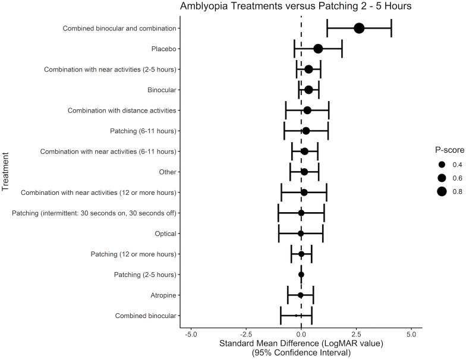
P-score: "combined binocular + combination" và bịt mắt 2–5 giờ nằm nhóm hiệu quả; atropine và bịt mắt liều thấp thấp hơn. Nguồn: Brin TA et al., PMC8043000 Fig. 6, CC BY-NC 4.0 (giữ nguyên bản).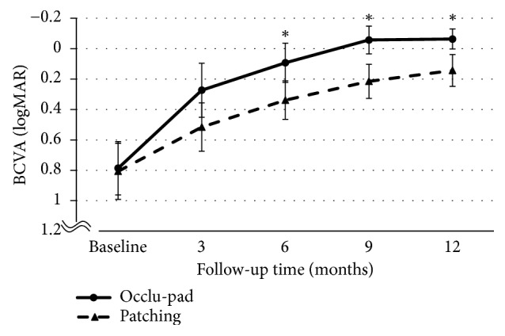
*Occlu-pad (liền) tốt hơn bịt mắt (đứt) tại 6, 9, 12 tháng (dấu ). Nguồn: Totsuka S et al., Biomed Res Int 2018, PMC6282136 Fig. 2, CC BY 4.0.4. Protocol xử trí + hệ phân độ/điểm chuẩn hóa
- Bước 0 — khúc xạ dưới lý liệt điều tiết (cycloplegic refraction) là bắt buộc: mọi trẻ non/ROP cần đo khúc xạ sau giãn đồng tử, không tin kết quả máy đo khúc xạ tự động ở trẻ nhỏ. Ngưỡng đáng chú ý: dị khúc xạ ≥ 1,5 D, viễn thị ≥ 2 D, loạn thị/cận thị cao (Fieß A, PMC11503079).
- Bước 1 — kính chỉnh đúng (theo khúc xạ lý liệt), đeo liên tục; theo dõi lại sau 6–8 tuần (Park SH, Korean J Ophthalmol 2019, PMC6911788).
- Bước 2 — nếu không cải thiện thị lực: bịt mắt 2 giờ/ngày hoặc atropine cuối tuần; nếu cải thiện → theo dõi sát, giảm liều dần rồi ngừng.
- Bước 3 — nếu không tiến triển thêm: tăng lên 6 giờ bịt mắt/ngày hoặc chuyển/pha thêm phương thức (bịt mắt ↔ atropine, thêm điều trị nhị phân). Liều bịt mắt có quan hệ liều–đáp ứng: bịt mắt 2–5 giờ là mức "chuẩn so sánh" trong các thử nghiệm, liều 12 giờ hoặc hơn không chắc tốt hơn (Brin TA, PMC8043000) — không "bịt mắt càng nhiều càng tốt".
- Điều trị kỹ thuật số (bổ trợ): Occlu-pad (iPad lột lớp phân cực) và phim nhị phân (dichoptic) giúp tăng tuân thủ; hiệu quả thị lực tương đương bịt mắt ở ngắn hạn, vượt hơn về tuân thủ (Totsuka S, PMC6282136; Jost RM, PMC8905014).
- Rung giật nhãn cầu/kết cục dài hạn: nhóm ROP + điều trị + lác + rung giật có thị lực và chức năng thị giác thấp nhất (Fieß A, PMC10275879) → tầm soát khúc xạ–lác–nhược thị định kỳ suốt tuổi học đường, chuyển tiếp sang người lớn.
- Thời điểm can thiệp phẫu thuật lác: nói chung sau khi đã chỉnh khúc xạ và điều trị nhược thị tối ưu và khi góc lác ổn định; chưa rõ ngưỡng góc "ổn định" cụ thể trong quần thể sinh non — cần tra thêm.
flowchart TD
A[Trẻ sinh non/ROP:<br/>tầm soát khúc xạ - lác - nhược thị] --> B[Đo khúc xạ<br/>dưới lý liệt điều tiết]
B --> C[Cấp kính chỉnh đúng]
C --> D{Theo dõi 6-8 tuần<br/>thị lực cải thiện?}
D -->|Có| E[Tiếp tục kính<br/>+ khám định kỳ]
D -->|Không| F[Bịt mắt 2 giờ/ngày<br/>HOẶC atropine cuối tuần]
F --> G{Cải thiện?}
G -->|Có| H[Theo dõi sát<br/>giảm liều dần rồi ngừng]
G -->|Không thêm| I[Tăng 6 giờ bịt mắt/ngày<br/>HOẶC pha/chuyển phương thức]
I --> J[Xét phẫu thuật lác khi<br/>góc ổn định + nhược thị tối ưu]
K{"Lác mới đột ngột<br/>+ song thị (AACE)?"} -->|Có| L[Chụp MRI/CT não - hốc mắt<br/>loại trừ u hố sau]
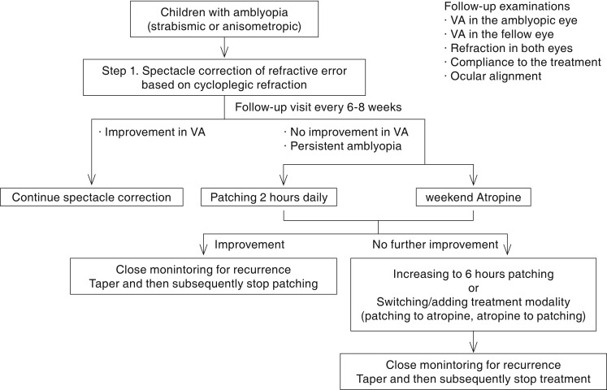
Trẻ nhược thị → Bước 1: kính chỉnh theo khúc xạ lý liệt → theo dõi 6–8 tuần → không cải thiện: bịt mắt 2 giờ/ngày hoặc atropine cuối tuần → không tiến triển: tăng 6 giờ hoặc đổi phương thức. Nguồn: Park SH, Korean J Ophthalmol 2019, PMC6911788 Fig. 1, CC BY-NC 3.0 (giữ nguyên bản).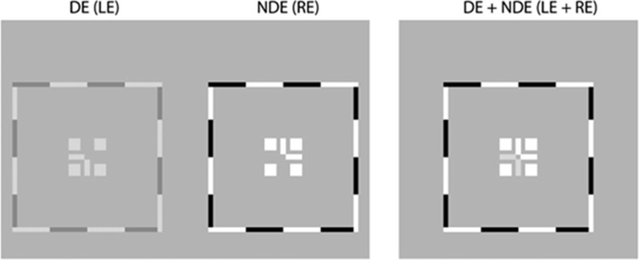
Mắt ưu thế (DE/LE) nhận ảnh tương phản thấp, mắt nhược thị (NDE/RE) nhận ảnh tương phản cao → buộc não dùng cả hai mắt. Nguồn: Kraus CL et al., Br J Ophthalmol 2018, PMC6241622 Fig. 1, CC BY-NC 4.0 (giữ nguyên bản).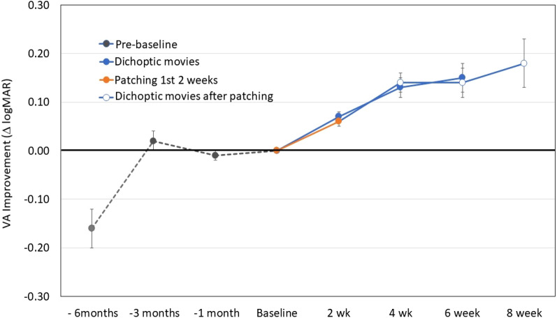
ΔlogMAR theo thời gian: phim nhị phân (xanh) và bịt mắt 2 tuần đầu (cam) cải thiện tương đương; sau đó cả nhóm chuyển sang phim nhị phân tiếp tục cải thiện tới tuần 8. Nguồn: Jost RM et al., Sci Rep 2022, PMC8905014 Fig. 2, CC BY 4.0.5. Biến thể bình thường và cạm bẫy
- Cân nặng sinh KHÔNG đủ để tiên đoán: trong một loạt trẻ ≤ 34 tuần, cân nặng khác biệt giữa nhóm chính thị/lác ngoài/lác trong không có ý nghĩa (p = 0,136) — tuổi thai và tình trạng ROP quan trọng hơn cân nặng đơn thuần (Gadzo AP, PMC10117192).
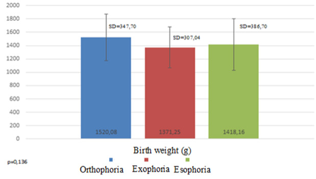
Cân nặng sinh trung bình (g) ở nhóm chính thị (1520,08), lác ngoài (1371,25), lác trong (1418,16); p = 0,136 → cân nặng đơn thuần không phân biệt được nguy cơ. Nguồn: Gadzo AP et al., Rom J Ophthalmol 2023, PMC10117192 Fig. 1, CC BY 4.0.- Lác do điều tiết "giả lác cơ năng": nếu không lý liệt điều tiết sẽ bỏ sót viễn thị và cho trẻ mổ oan — luôn soi bóng/khúc xạ lý liệt đúng (atropine/cyclopentolate).
- Đo khúc xạ tự động sai ở trẻ: máy tự động không thay cho soi bóng trên trẻ nhỏ, đặc biệt trẻ non có kích thích.
- Nhược thị bị "che" bởi rung giật nhãn cầu/bệnh não: đánh giá thị lực ở trẻ non phải dùng bảng phù hợp lứa tuổi (Teller/Lea); đừng quy toàn bộ giảm thị lực cho ROP.
- AACE không được coi là "lành": Chen J (PMC4697976) có 2/47 ca u hố sau → bắt buộc hình ảnh não–hốc mắt. Bỏ qua bước này là cạm bẫy chết người.
- Không phẫu thuật lác khi nhược thị chưa tối ưu: mổ trước khi chỉnh khúc xạ/bịt mắt đúng → tái lác và thị lực kém.
- Bịt mắt quá liều: bịt mắt ≥ 12 giờ/ngày không chứng minh tốt hơn 2–5 giờ — tăng nguy cơ nhược thị đảo mắt bịt (occlusion amblyopia). Cân nhắc atropine/kỹ thuật số để giảm liều che.
- Cận thị tiến triển sau ROP: sau laser/anti-VEGF, khúc xạ thay đổi nhanh → tái khám khúc xạ định kỳ, không "chốt" đơn kính một lần.
6. Tự lượng giá — Blind Quiz
Ca 1 — Trẻ 6 tuổi, sinh 27 tuần, đã laser ROP hai mắt. Khám: mắt kém thị lực, có lác.
- Bối cảnh: nghi lác và nhược thị sau ROP.
- Câu hỏi: Nhóm nào trên biểu đồ (theo mức non/ROP) có thị lực kém nhất? Vì sao cân nhắc cả yếu tố não, không chỉ mắt?
Bấm để hiện đáp án (findings + chẩn đoán)
- Nhóm ROP điều trị có DCVA logMAR cao nhất (thị lực kém nhất) và điểm thang cảm xúc–xã hội/chức năng thị giác thấp nhất. Ở trẻ này, lác thường là lác cảm giác (sensory) do chênh thị lực hai mắt.
- Cạm bẫy: giảm thị lực ở trẻ non thường phối hợp thành phần não (bệnh não trắng) → một phần không hồi phục bằng kính/bịt mắt; cần đặt kỳ vọng thực tế.
- Xử trí: chỉnh khúc xạ lý liệt đúng + điều trị nhược thị tối ưu, theo dõi 6–8 tuần; phẫu thuật lác khi góc ổn định.
- Nguồn: Fieß A et al., Eye 2023, PMC10275879 Fig. 1, CC BY 4.0.
Ca 2 — Trẻ 5 tuổi sinh 28 tuần: khúc xạ lý liệt phát hiện dị khúc xạ, thị lực một mắt giảm. Đọc bảng tỷ lệ lác để hiểu nguy cơ.
- Bối cảnh: trẻ non không ROP, đang theo dõi.
- Câu hỏi: Nhóm tuổi thai nào có lác trong cao nhất (ngoài nhóm ROP)? Dị khúc xạ ≥ 1,5 D làm tăng nguy cơ lác bao nhiêu?
Bấm để hiện đáp án (findings + chẩn đoán)
- Lác trong chiếm ưu thế và tăng rõ ở 29–32 tuần (17,4%) và đặc biệt ở ROP điều trị (~46% lác trong). Ngoài nhóm ROP, nguy cơ tăng dần khi tuổi thai giảm.
- Dị khúc xạ ≥ 1,5 D → OR 3,87; viễn thị ≥ 2 D → OR 9,89 (Fieß A, PMC11503079).
- Chẩn đoán: nhược thị khúc xạ/lác do khúc xạ → ưu tiên kính chỉnh trước, rồi mới bịt mắt/atropine; theo dõi 6–8 tuần.
- Nguồn: Fieß A et al., Br J Ophthalmol 2024, PMC11503079 Fig. 1, CC BY-NC 4.0 (giữ nguyên bản).
Ca 3 — Chọn phương thức điều trị nhược thị: nhìn vào rừng so sánh.
- Bối cảnh: phụ huynh hỏi "có cách nào không cần bịt mắt nhiều không?".
- Câu hỏi: Kết quả gộp nói gì về hiệu quả bịt mắt so với điều trị nhị phân? Yếu tố nào có thể làm kết quả khác biệt?
Bấm để hiện đáp án (findings + chẩn đoán)
- MD tổng 0,02 logMAR [−0,02; 0,06] — không khác biệt có ý nghĩa lâm sàng; nghiêng nhẹ về bịt mắt; I² = 80% (không đồng nhất cao).
- Yếu tố then chốt là TUÂN THỦ, không phải bản thân phương thức: Occlu-pad và phim nhị phân giúp tăng tuân thủ (Totsuka S, PMC6282136; Jost RM, PMC8905014) → có thể là lựa chọn khi trẻ khó chịu với bịt mắt.
- Chẩn đoán: không có "phương thức vô địch"; chọn theo tuân thủ + độ tuổi + mức nhược thị; giảm liều bịt mắt là hợp lý nếu duy trì đều.
- Nguồn: Brin TA et al., BMJ Open Ophthalmol 2021, PMC8043000 Fig. 4, CC BY-NC 4.0 (giữ nguyên bản).
Bài liên quan chéo
- 458 – Di chứng & theo dõi dài hạn sau ROP
- 456 – Bệnh võng mạc trẻ sinh non (ROP)
- 461 – Chọn thuốc & phác đồ anti-VEGF cho ROP
- 468 – Sàng lọc ROP từ xa (tele-ROP) & AI
- 450 – Mắt trẻ em (leukocoria & tiếp cận)
- 433 – Phù đĩa thị vs drusen đĩa
Ảnh
- Tên file
469_lac-nhuoc-thi_<nội dung>_<Tạp chí>-<Năm>-Fig<k>-<giấy phép>.jpg; nguồn + giấy phép từng ảnh trongimages/CREDITS.md. - Ảnh CC BY-NC / CC BY-NC-ND giữ nguyên bản (không crop, không ghép). Chỉ ảnh CC BY được dùng để tạo ảnh ghép (
composite_469_bit-mat-vs-dieu-tri-so.jpg, letterbox giữ nguyên tỷ lệ).
Không dùng để chẩn đoán độc lập khi chưa có người hướng dẫn.